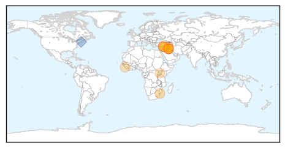
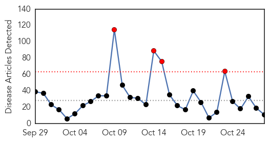
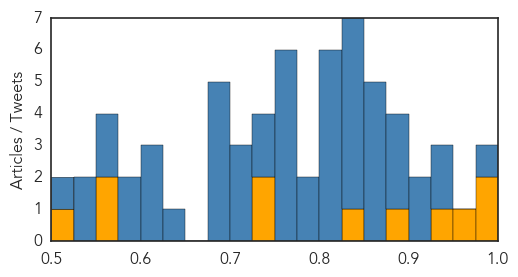

Cholera
30-Day Web Trend
5 alerts, 0 warnings

30-Day Twitter Trend
10 alerts, 0 warnings

Article Locations
Article Confidences

Top Articles:
- 0.993
- Cholera spreading in Iraq, suspected case reported in Syria: WHO
- 0.993
- Cholera spreading in Iraq, suspected case reported in Syria UN health agency
- 0.992
- Cholera spreading in Iraq, suspected case reported in Syria: WHO
- 0.990
- Cholera fears for Iraq and Syria
- 0.986
- Cholera resurfaces in Mozambique
- 0.985
- U.N. targets thousands in vaccination drive against cholera in Iraq
- 0.985
- U.N. targets thousands in vaccination drive against cholera in Iraq
- 0.977
- U.N. targets thousands in vaccination drive against cholera in Iraq
- 0.927
- Cholera spreading in Iraq, suspected case reported in Syria – UN health agency
- 0.863
- Prime Minister Blames Uganda’s Poverty on Malnutrition
- 0.820
- Aftermath of Flooding Affects Freetown, Sierra Leone - Sierra Leone
Top Tweets:
- 0.691
- RT: .@UN isn't a beacon for 900,000 Haitians infected by UN's cholera. @BanKimoon_amdg stand up for justice in Haiti ht…
- 0.666
- WHO mobilizes 510,000 doses of oral cholera vaccine to help control the outbreak in Iraq https://t.co/xCWQ6mmwo6 https://t.co/2mvyiUCTww
- 0.642
- RT: .@BeaLindstrom speaks to packed & transfixed audience on suing the U.N. for the 2010 Haiti cholera outbreak htt…
Ebola
30-Day Web Trend
4 alerts, 0 warnings

30-Day Twitter Trend
12 alerts, 0 warnings

Article Locations

Article Confidences
Top Articles:
- 0.998
- The Politics behind the Ebola Crisis
- 0.997
- Ebola Epidemic Goes Out of Control – Global Alert
- 0.961
- Beyond Ebola: Boston Physicians Lead Global Effort To Prevent The Next Pandemic
- 0.938
- This Ebola-Type Fever Is Named After A Town In Germany
- 0.890
- ADRA Country Director Urges Good Hygiene Practice
- 0.843
- Cleveland Clinic: Speedier development of vaccines top medical innovation for 2016
- 0.731
- United Nations Press Release
- 0.731
- Health Check, The first chemical proof of our brain adapting to chronic pain
- 0.574
- Extinguishing Ebola: Greeley Central graduate plays a small role in helping to snuff the outbreak of
- 0.564
- Is the momentum right for universal health coverage?
- 0.513
- Dont drop your guards....Rtd. Brig. Bio appeals in Pujehun
Top Tweets:
- 0.998
- Ebola fever - https://t.co/yHiIXeztds ebola
- 0.997
- Ebola virus disease (EVD) - https://t.co/ncVmkQ2PHd ebola
- 0.995
- ebola - https://t.co/UbB8B1h2R3 ebola
- 0.991
- Boston Doctors Lead International Efforts to Prevent Next Ebola Outbreak - https://t.co/hiJH3e3bYE ebola
- 0.983
- Reanimadores, RIP Kids, GHB, Enoch Ramone & The Ebola Boys - https://t.co/aotuMbCkuT ebola
- 0.981
- Ebola Crisis - https://t.co/6bmFuquukg ebola
- 0.978
- YWCA Identifies with Ebola Widow, widowers - https://t.co/DDlN2ke4nA ebola
- 0.978
- YWCA Identifies With Ebola Widow, Widowers - https://t.co/ExGHVMmxYM ebola
- 0.974
- Photo Feature: After Ebola, Sierra Leone's burial workers fear a bleak future - https://t.co/31VbcbRLmm ebola
- 0.973
- Public Information Campaigns On Ebola Continue In West Africa - https://t.co/QtXSxEBF3t ebola
- 0.972
- Stryker spreads awareness about Ebola in Africa - https://t.co/UiBTJtC6Px ebola
- 0.972
- SUSPECT EBOLA CASE IN GALICIA TESTS NEGATIVE - https://t.co/RQNPlTBDhz ebola
- 0.971
- Digitizing Payments to Ebola Response Workers - https://t.co/b5g0TWEF3J ebola
- 0.964
- Documenting the Response to the Ebola Epidemic in Liberia through the Perspective of the Local ... - https://t.co/wZe0MoiGtq ebola
- 0.959
- RT: The Importance of Having `Flu Buddies’ In A Pandemic by https://t.co/yc0o73Di79 ebola flu
- 0.959
- Nurse Quarantined During Ebola Panic Sues Chris Christie - https://t.co/Ku3UuAxkMg ebola
- 0.956
- Ebola vaccine trials get underway in Uganda - https://t.co/mCDVhGjI2G ebola
- 0.956
- Ebola sickens 3 family members in Guinea - https://t.co/k9rCbnvYIb ebola
- 0.954
- South Reassures Bio of Zero Ebola - https://t.co/BA2Xmpvfh1 ebola
- 0.951
- Rigorous screening at US airports for Ebola virus - https://t.co/71EJaidmgS ebola
- 0.944
- Sierra Leone News:EU working with Govt. in post-ebola recovery - https://t.co/2BOzz3EJ8H ebola
- 0.944
- MSF analyses Ebola crisis with Belgian software - https://t.co/oBT3h8Tcyp ebola
- 0.943
- Ebola '76 by Amir Tag Elsir – Chapter One - https://t.co/voLQcPE8RD ebola
- 0.941
- Ebola vaccine trials get underway in Uganda - New Vision https://t.co/XzXdn1jmlQ ebola EVD
- 0.936
- Ebola: Expert tasks Nigerians on hygiene - https://t.co/G7KgPEbhhA ebola
- 0.931
- Beyond Ebola and Polio - https://t.co/XBdBASp7ct ebola
- 0.926
- Guinea records three new cases of Ebola, brings total to nine - https://t.co/PBcYjjpYMf ebola
- 0.925
- Ebola Survivors Still Have Myriad Problems - MedPage Today https://t.co/rP7x5GPGRU ebola EVD
- 0.924
- Nurse quarantined over Ebola has no plan to sue in Maine - https://t.co/qwLwGgsTzJ ebola
- 0.917
- Defense: Supect in ATM worker slaying believed victim was spreading Ebola - WLWT Cincinnati https://t.co/bsrQNCtQAf ebola EVD
- 0.915
- The Politics behind the Ebola Crisis - International Crisis Group https://t.co/55XeumskcI ebola EVD
- 0.915
- Mental health in emergency response: lessons from Ebola - https://t.co/bcLcxEPvyt ebola
- 0.911
- British People Are Being Offered Money To Be Injected With Ebola - https://t.co/tLf6mfq3rA ebola
- 0.910
- The Politics behind the Ebola Crisis - https://t.co/1pgvSeLPNj ebola
- 0.910
- ICG: The politics behind the Ebola crisis - https://t.co/tpESdaGTmE ebola
- 0.908
- Trade unions embrace Ebola workplace response - https://t.co/tmWjqs8fNe ebola
- 0.889
- Guinea reported 3 Ebola cases for the week to Oct 25. All are household contacts of a known case. The tail on this outbreak is looooong,
- 0.874
- Visa rules, Ebola scare hit Cape conventions - BDlive https://t.co/z3agqQCdCd ebola EVD
- 0.870
- Report Finds Gaps In Army Oversight Of Ebola Fight Contract - https://t.co/OJzwrfnkMg ebola
- 0.861
- Nurse Saying She Was Unlawfully Detained Over Ebola Scare Suing Christie - https://t.co/WhYoidNgEo ebola
- 0.860
- Rep. Berrian Honors Several Teachers for Ebola Fight - https://t.co/Fl22DteqDb ebola
- 0.846
- Visa rules, Ebola scare hit Cape conventions - https://t.co/zmmAL6Whlj ebola
- 0.844
- Ebola crisis in Africa leads to increase in teenage pregnancies - https://t.co/iPTTzhUC9I ebola
- 0.837
- Government Thrives on Fear - https://t.co/FpSBUUMizu ebola
- 0.834
- Watch Live Life's Vine, "I have Ebola comedy live funny Fun" - https://t.co/p5AZJxp0fd ebola
- 0.834
- 'I want to spread startup ebola': Steve Baxter and 20 coding kids from Queensland share what they ... - https://t.co/J9k9Ude4W2 ebola
- 0.813
- Ebola survivors research enrollment hits 931 - https://t.co/g84ExLy9tS ebola
- 0.810
- Technical Appendix - https://t.co/GL8OvxqCx3 ebola
- 0.793
- Biocontainment lab director visits EPI to give lecture on Ebola - https://t.co/TU23kWm943 ebola
- 0.779
- Unprecedented Ebola epidemic highlights global need for stronger systems for disease tracking, response, prevention https://t.co/UUhX7bSgi5
Showing top 50 tweets...